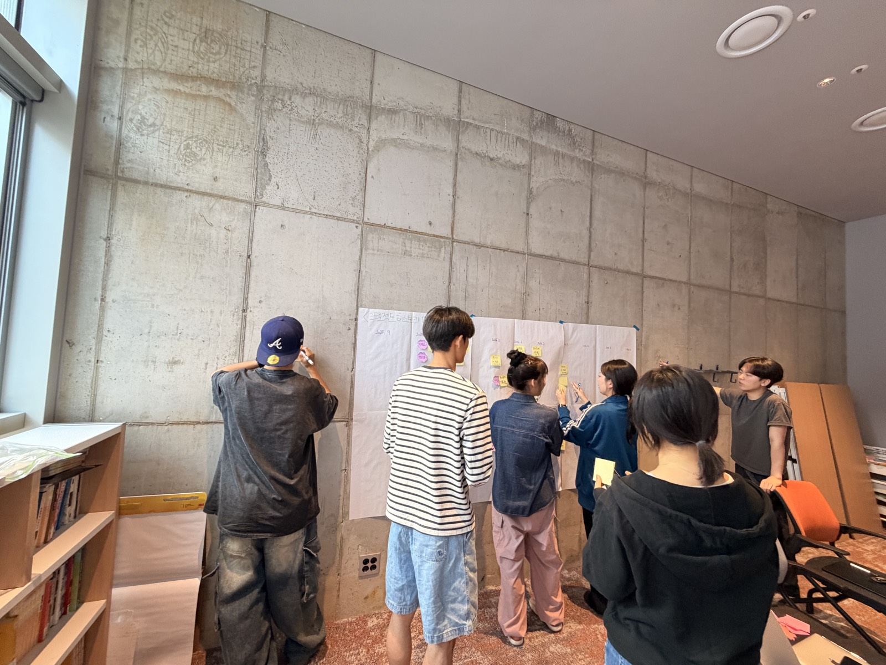

The people
서로 다른 열 명이 같은 방향을 만듭니다.
포지션과 담당은 싣지 않습니다. 한 사람이 한 역할에 묶이지 않고, 문제에 따라 자리를 바꿔 가며 일하기 때문입니다. 사진은 팀이 고르는 대로 채웁니다.
- 브루노리모 · 협동조합원
- 쏠리모 · 협동조합원
- 조이리모 · 협동조합원
- 정우리모 · 협동조합원
- 막스리모 · 협동조합원
- 유진리모 · 협동조합원
- 로리모 · 협동조합원
- 겸리모 · 협동조합원
- 이든리모 · 협동조합원
- 비크리모 · 협동조합원

How we work
혼자가 아닌 팀으로 선순환하며, 시장의 평가 속에서 성장한다.
비전(2년차), 팀 노션 원문. 의사결정은 1차 만장일치 → 2차 80% → 3차 60%로 내립니다. 이번 분기(2026.09 → 12) 목표는 "팀이 서로 연결되어 협업할 수 있는 시스템을 구축한다."
좋은 일은 좋은 사람들과의 대화에서 시작됩니다.
문의하기